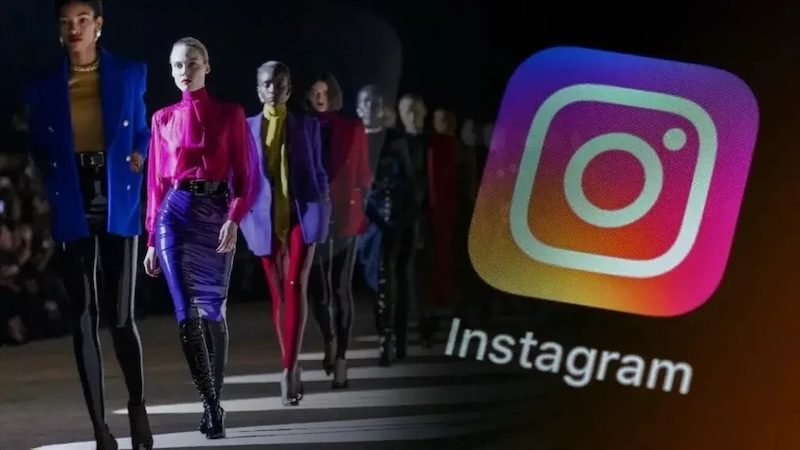

The Digital Runway: Social Media's Influence on Style
Platforms like TikTok, Instagram, and Pinterest have completely revolutionized how we consume, critique, and participate in fashion. Historically, fashion trends were dictated by a handful of designers in Paris or Milan. Today, social media acts as an endless, algorithmic runway, constantly feeding us new styles and micro-trends from everyday people around the globe.
This shift has profound psychological impacts. On one hand, the high-speed trend cycle created by platforms like TikTok can trigger intense FOMO (Fear Of Missing Out). The pressure to participate in the "Outfit of the Day" culture can push users to constantly update their wardrobes to feel relevant, leading to anxiety about outfit repeating. The digital validation of likes becomes intertwined with a person's confidence in their appearance.
On the other hand, the digital runway is incredibly empowering. Social media provides endless inspiration, allowing individuals to experiment with styles they might never have discovered locally. It encourages bold self-expression, as users can easily find digital communities that validate and celebrate their unique sartorial choices, no matter how niche. It has allowed Gen Z to blur gender lines and turn the act of getting dressed into a highly creative, daily art form.
Text generated by Google Gemini
Source: Fashinnovation